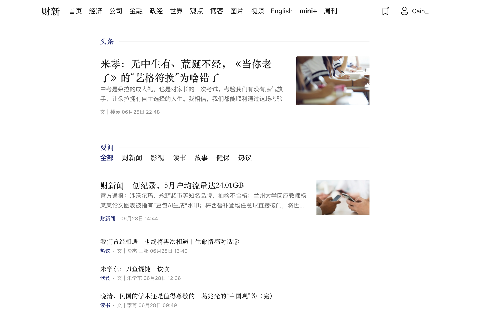

财新阅读增强 · Chrome / Edge / Firefox
把财新读成一份安静的现代报刊
Modern for Caixin 面向每天读财新的桌面读者。它收起门户噪音，保留新闻的层级和重点，让首页更清爽，长文更专注。
Chrome、Edge、Firefox 链接准备好后会在这里更新；手动安装包同步发布在 GitHub Releases。

它适合谁
Modern for Caixin 适合在桌面浏览器里长期阅读财新的用户：订阅读者、财经从业者、研究者，以及希望把网页读成一份清爽报刊的人。
功能特性
首页和频道更清爽
按头条、要闻、专栏等结构重排，保留重要度，减少拥挤感。
长文更专注
文章页使用窄阅读列、衬线正文和稳定行距，让阅读节奏更像报刊。
周刊保留出版物感
封面、分栏目录、往期网格按杂志语境呈现，而不是普通列表。
样式隔离
React 界面挂在 Shadow DOM 中，扩展样式与财新原站样式互不污染。
安心使用
安装与发布渠道
Chrome / Edge / Firefox 商店版
商店版提供免费核心体验。上架链接准备好后会在这里更新。
GitHub Releases
安装包发布在 GitHub Releases，提供 Chrome / Edge / Firefox 三个平台的解压即装版本。下载对应平台的 zip，解压后在浏览器扩展页开启「开发者模式」加载即可。
权限与隐私
扩展请求 *://*.caixin.com/*，因为它只在财新页面工作。权限用于读取当前页面 DOM、注入本地阅读界面，并在少数列表区块请求匿名公开数据补全，不携带 cookie。扩展还使用 storage 在浏览器本地保存设置、阅读清单、历史足迹、高亮和 Pro 状态，不上传。
- 不上传浏览历史或阅读记录。
- 不上传正文、标题、评论、截图或页面 HTML。
- 不读取密码，不保存或传输账号、cookie、订阅信息或支付信息。
常见问题
这是财新官方产品吗？
不是。Modern for Caixin 是第三方、非官方项目，与财新传媒无关联，也未获得财新官方背书。
和通用阅读模式有什么不同？
通用阅读模式通常只抽取正文。Modern for Caixin 会按财新页面结构处理首页、频道、文章和周刊，保留新闻层级。
免费版能用多久？
核心阅读体验永久免费。商店版会先保持这个清爽默认，不做设置面板。